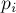
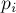

MAXimal
добавлено: 11 Jul 2008 13:58
редактировано: 27 May 2012 17:55
Содержание [скрыть]
Нахождение степени делителя факториала
Даны два числа:  и
и  . Требуется посчитать, с какой степенью делитель входит в число
. Требуется посчитать, с какой степенью делитель входит в число  , т.е. найти наибольшее
, т.е. найти наибольшее  такое, что делится на
такое, что делится на  .
.
Решение для случая простого 
Рассмотрим сначала случай, когда простое.
Выпишем выражение для факториала в явном виде:
Заметим, что каждый -ый член этого произведения делится на , т.е. даёт +1 к ответу; количество таких членов равно .
Далее, заметим, что каждый -ый член этого ряда делится на , т.е. даёт ещё +1 к ответу (учитывая, что в первой степени уже было учтено до этого); количество таких членов равно .
И так далее, каждый -ый член ряда даёт +1 к ответу, а количество таких членов равно .
Таким образом, ответ равен величине:
Эта сумма, разумеется, не бесконечная, т.к. только первые примерно членов отличны от нуля. Следовательно, асимптотика такого алгоритма равна .
Реализация:
int fact_pow (int n, int k) { int res = 0; while (n) { n /= k; res += n; } return res; }
Решение для случая составного
Ту же идею применить здесь непосредственно уже нельзя.
Но мы можем факторизовать , решить задачу для каждого его простого делителя, а потом выбрать минимум из ответов.
Более формально, пусть — это  -ый делитель числа , входящий в него в степени . Решим задачу для с помощью вышеописанной формулы за
-ый делитель числа , входящий в него в степени . Решим задачу для с помощью вышеописанной формулы за  ; пусть мы получили ответ . Тогда ответом для составного будет минимум из величин .
; пусть мы получили ответ . Тогда ответом для составного будет минимум из величин .
Учитывая, что факторизация простейшим образом выполняется за , получаем итоговую асимптотику .